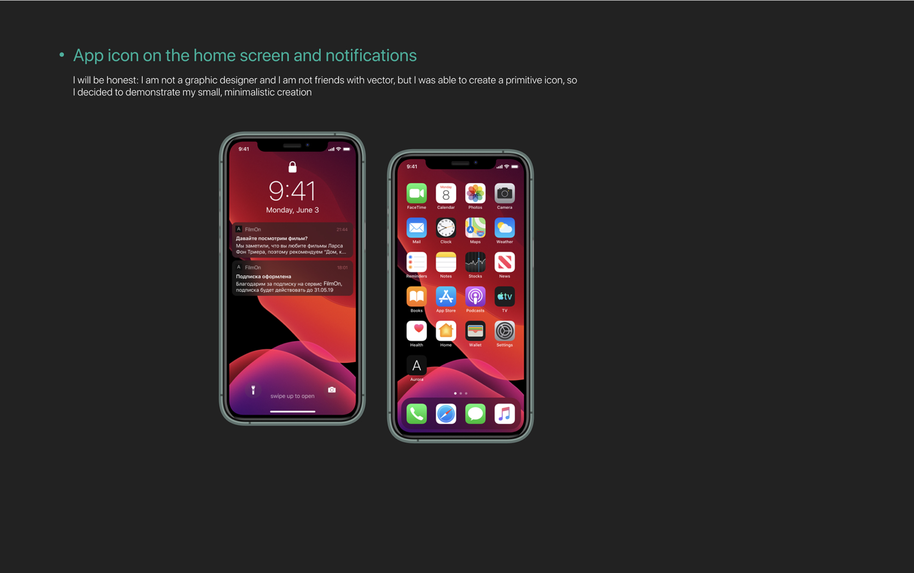
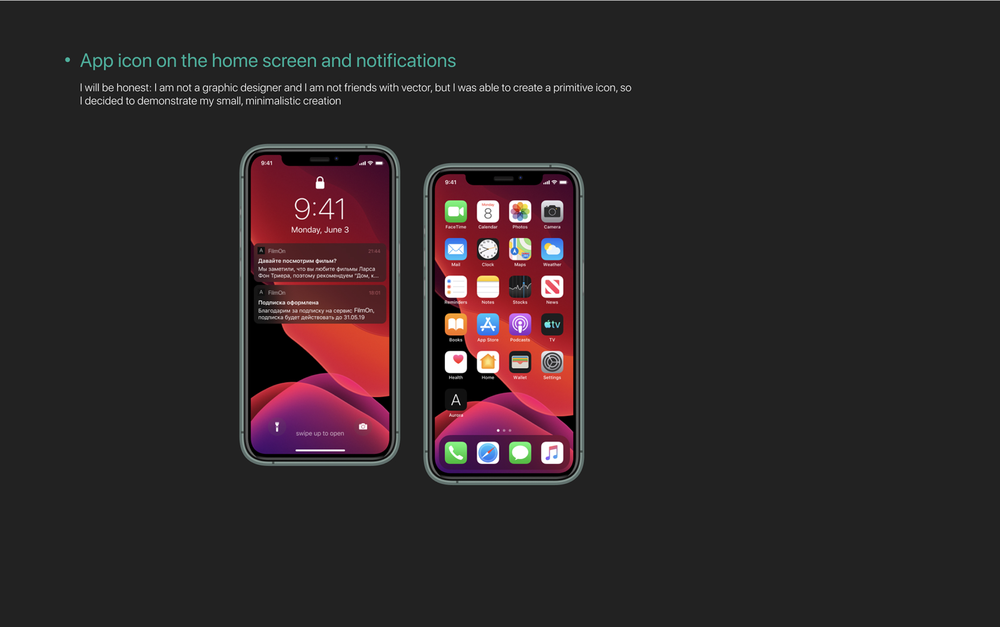
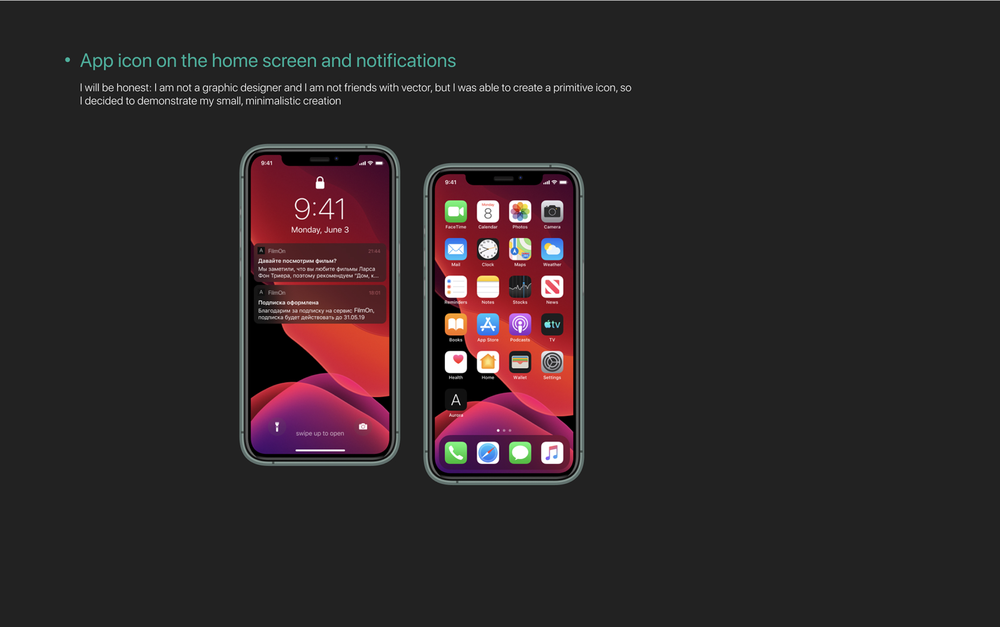

Filmon is a fictional Russian online movie theater. In the app, you can watch a movie or TV series, quickly connect the TV for easy viewing on the big screen, and manage your browsing history, bookmarks, and downloads from the app. Also available are personal recommendations and smart notifications that will prompt the movie for the evening. When developing the design, the emphasis was placed on convenience and flexibility of use
